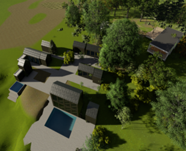
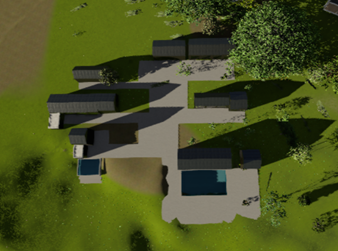

石头，千百年来与平潭人民生活息息相关，在刀耕火种的时代平潭先民就用石头打磨各种器皿。 由于旧时平潭是一座孤岛，无论是物质运输还是人员流通，都存在诸多不便，于是平潭人就地取材，利用岛上丰富的石材建造房屋， 石头厝便由此产生了。碉堡般的石头厝，不仅冬暖夏凉，而且可以抵挡海岛的大风大浪以及潮湿等各种恶劣天气。岛上石头厝的建造， 不仅是对海岛先民生存智慧结晶的传承与发展，更是对平潭文化的交流与传播，游客们可以居住在饱含文化气息的石头厝里体验着渔家生活， 倾听大海与石头的故事。
同时岛上可以提供帐篷租借，并配备专业的人员进行教学或者搭建，使得游客在动手实操的过程中，远离钢筋水泥，体验更加接近原生态的住宿。
  *********@qq.com
*********@qq.com